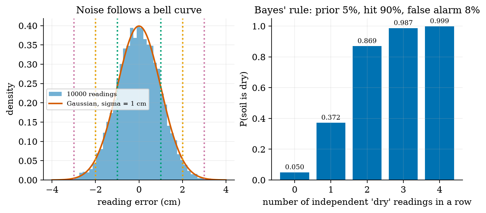
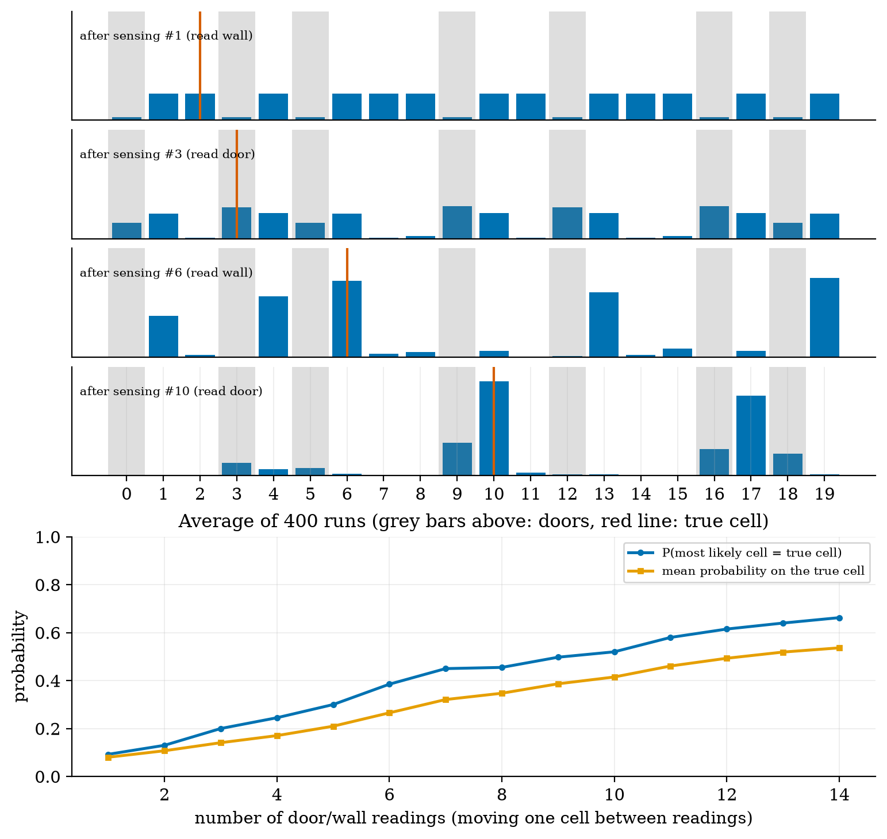
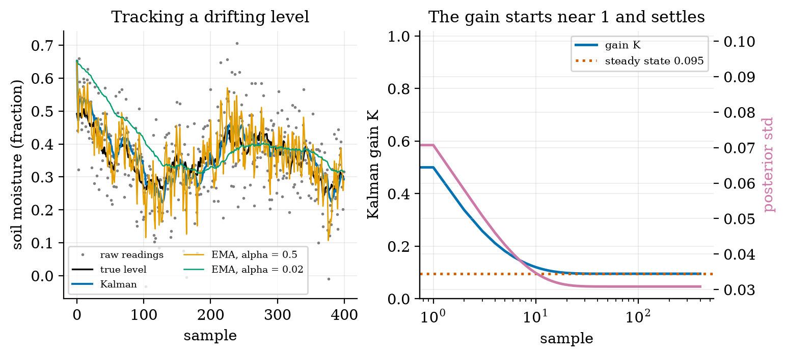
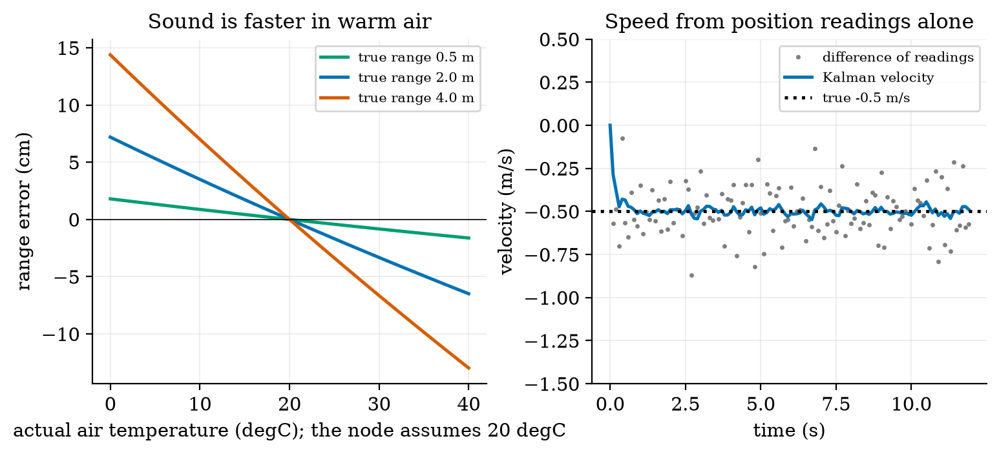
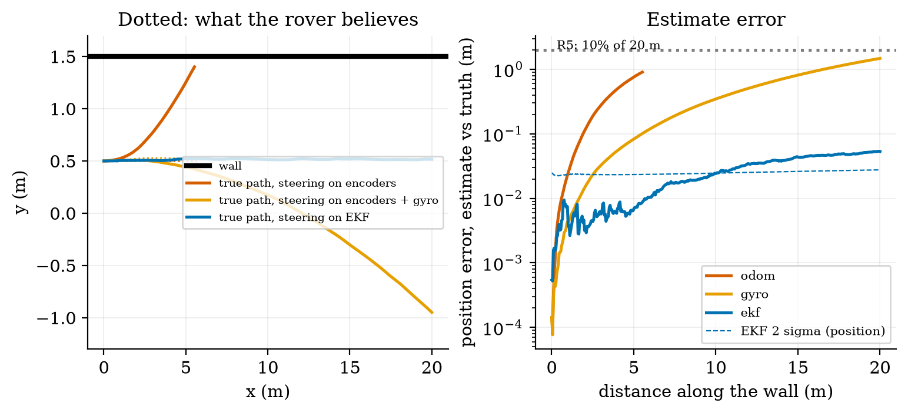
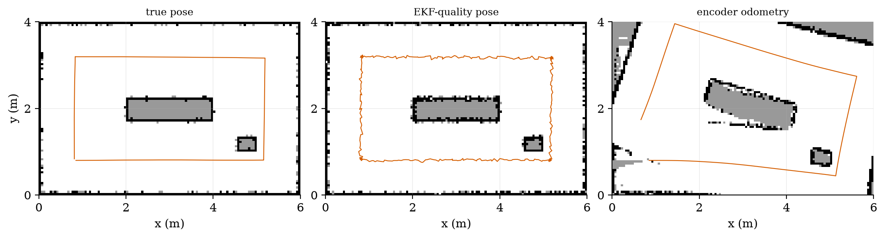

Unit 10 ready
Perception and Localisation: Knowing Where You Are
Gaussian noise, Bayes' rule, the Kalman filter, sensor fusion and occupancy grids.
Session map
After this session you can:
- describe sensor noise as a Gaussian, state Bayes’ rule, and use both to combine a prior belief with a measurement;
- run a histogram filter that localises a robot on a corridor with doors, and explain why a noisy move loses information that a noisy sensor must win back;
- derive the scalar Kalman filter (predict, update, gain), compute its steady-state gain in closed form, and show that a fixed-gain EMA filter is its special case;
- fuse encoders, a gyroscope and ultrasonic wall ranges in an extended Kalman filter, and say what it can and cannot correct;
- turn ultrasonic echoes into ranges (including the temperature error) and build an occupancy grid, and see why a map is only as good as the pose it is built with.
- Prerequisites: Unit 3 (noise, quantisation, the EMA filter, ultrasonic sensors), Unit 6 (the false-alarm lesson), Unit 8 (the shared rover, odometry drift, the Jacobian), Unit 9 (steering on an estimate). Basic probability.
- Difficulty ladder used: easy → medium → medium-hard → hard (Sections 3.1 to 3.4); the hardest tier is posed as open questions in Section 3.5.
- Deliverables: this document (.tex, .pdf, .docx), 6 figures, the module
codes/robotics/localize_np/(Gaussian and Bayes helpers, a histogram filter,Kalman1D, a constant-velocity filter, the ultrasonic model,PoseEKF,patrol,OccupancyGrid; 9 tests, one cross-checked against SciPy’s Riccati solver), and logs of every printed number. - Source anchors: all formulas are derived in the text. Kalman’s 1960 paper was not read (the copies tried returned web pages, not the PDF), and neither was Thrun, Burgard and Fox, Probabilistic Robotics; the filter is derived here from the Gaussian product rule and checked numerically (SciPy’s discrete Riccati solution and Monte Carlo coverage). The gyroscope bias (0.2 degrees per second) and noise, the ultrasonic noise (1 cm, 2 cm), the wheel error (0.5%), the slip variance (from Unit 8), the sensor and door error rates, the wall position and the map are assumed round numbers. Nothing was run on hardware.
1. Terms: the term tree
| Term | Symbol | One-line meaning | Where it appears | New / known |
|---|---|---|---|---|
| standard deviation and variance | \sigma, \sigma^2 | the spread of a noisy quantity, and its square | 3.1 | known |
| Gaussian (normal) distribution | \mathcal N(\mu,\sigma^2) | the bell curve; the shape that many added-up small errors take | 3.1 | new |
| prior and posterior | the belief before and after a measurement | 3.1 | new | |
| Bayes’ rule | P(H\mid z)=P(z\mid H)P(H)/P(z): how a measurement updates a belief | 3.1 | new | |
| belief | b(x) | the robot’s probability distribution over where it is | 3.2 | new |
| histogram filter | a belief stored as one probability per cell, updated by sensing and moving | 3.2 | new | |
| entropy | H | how spread out (uncertain) a belief is, in bits | 3.2 | new |
| Kalman filter | the optimal way to combine a linear motion model and measurements with Gaussian noise | 3.3 | new | |
| Kalman gain | K | how much of the surprise in a measurement is believed | 3.3 | new |
| innovation | \nu | measurement minus what the filter predicted it would be | 3.3 | new |
| covariance | P | the filter’s own estimate of its uncertainty (a matrix for several states) | 3.4 | new |
| sensor fusion | combining several imperfect sensors into one better estimate | 3.3 | new | |
| gyroscope and gyro bias | \omega_g, b | a sensor of turn rate, and its constant offset | 3.4 | new |
| extended Kalman filter (EKF) | the Kalman filter with a nonlinear model linearised at each step by its Jacobian | 3.4 | new | |
| ultrasonic time of flight | c | range from the round-trip time of a sound pulse and the speed of sound | 3.4 | new |
| occupancy grid | a map as a grid of probabilities that each cell is occupied | 3.4 | new | |
| log-odds | \ell | \ln\frac{p}{1-p}, so that evidence adds | 3.4 | new |
| filter consistency | whether the reported uncertainty matches the actual error | 3.4 | new |
Terms used but not taught here: SLAM (named in 3.5), cameras and LiDAR (named), the unscented and particle filters (named), observability (used informally in 3.5), the Riccati equation (used as a numerical check only).
2. Remember
A robot never knows where it is; it has measurements (noisy) and a motion model (drifting). A belief is the honest summary: a probability distribution over the possible poses. Localisation keeps the belief up to date; mapping does the same for the world.
Predict: use the motion model to move the belief; uncertainty grows. Update: use a measurement to sharpen it; uncertainty shrinks. The Kalman filter is this loop for Gaussian beliefs, with the weighting chosen optimally.
For a hypothesis H and a measurement z: P(H\mid z)=\dfrac{P(z\mid H)\,P(H)}{P(z\mid H)P(H)+P(z\mid\lnot H)P(\lnot H)}. The prior P(H) is what you believed; the posterior P(H\mid z) is what you believe after z.
Memory hooks.
- Predict spreads, update squeezes.
- Trust the more certain source more: the fused variance is always smaller than either input.
- The gain is the ratio uncertainty-in-the-model over (uncertainty-in-the-model plus uncertainty-in-the-sensor).
- A fixed-gain EMA is a Kalman filter that stopped learning its gain.
- A map built on a drifting pose is a smeared map.
Before you read on: three predictions (answers in Section 10).
- A soil sensor that is 90% sensitive and has an 8% false-alarm rate flags “dry”. Dryness is present 5% of the time. How likely is it that the soil really is dry: about 90%, about 50% or about 37%?
- A Kalman filter smooths a sensor with noise standard deviation 0.1 on a slowly drifting level. By how much does the filter shrink the error: to 90%, 50% or 30% of the raw error?
- The rover steers on the estimate while driving 20 m beside a wall. With encoders alone it believes it is on course. Does it get to the end of the wall, or touch the wall, and after roughly how far?
Recall quiz (answers in Section 10).
- What fraction of Gaussian noise lies within one, two and three standard deviations?
- When two independent estimates of the same quantity are fused, what happens to the variance?
- What does the Kalman gain approach when the sensor is perfect, and when the sensor is useless?
- Why can wall ranges fix the rover’s sideways error but not its along-the-wall error?
- Why does ultrasonic ranging need the air temperature?
3. Understand: the derivation
3.1 Tier 1 (easy): noise, probability and Bayes
Every sensor of Units 3 and 8 was noisy; here the noise gets a shape. Take 10000 readings of a wall 2.00 m away from an ultrasonic sensor with an assumed noise of 1 cm (fig01_gauss_bayes.py). The histogram of the errors is a bell: the Gaussian with density p(x)=\frac1{\sigma\sqrt{2\pi}}\exp\!\Big(-\frac{(x-\mu)^2}{2\sigma^2}\Big),\qquad P(|x-\mu|<k\sigma)=\operatorname{erf}\!\Big(\frac k{\sqrt2}\Big). \tag{1} The coverage is 68.27%, 95.45% and 99.73% for k=1,2,3; the 10000 simulated readings give 68.68%, 95.62% and 99.68%. The bell appears because the error is the sum of many small independent effects (the central limit theorem; stated, not proved here). Averaging n readings shrinks the noise as \sigma/\sqrt n: for 100 readings the standard deviation of the mean is 1.0 mm, and the simulation gives a sample standard deviation of 9.985 mm with a mean error of -0.11 mm.

Bayes’ rule in action. A sensor flags “dry” with probability 0.90 when the soil is dry and 0.08 when it is not; the soil is dry 5% of the time. After one positive reading, P(\text{dry}\mid +)=\frac{0.90\times0.05}{0.90\times0.05+0.08\times0.95}=\frac{0.045}{0.121}=0.372. \tag{2} Prediction 1 of Section 2: about 37%, not 90%, because 95% of the soil is not dry and 8% of that gives more false alarms than the 90% of the rare true cases (63% of the alerts are false). This is the base-rate effect met in Unit 6 as the false alarms of a low detector limit. Independent repeated readings multiply the odds: the posterior is 37.2%, 86.9%, 98.7% and 99.9% after one to four positives. The same reading means very different things at other priors: after one positive the posterior is 10.2% at a 1% prior, 73.8% at 20% and 91.8% at 50%. A measurement never gives the belief; it updates one you already had.
3.2 Tier 2 (medium): a belief on a grid, the histogram filter
Take the simplest robot problem: a rover on a ring corridor of 20 cells, 7 of which have a door (the grey cells of Figure 2). It does not know which cell it is in: the belief is 1/20 everywhere (4.32 bits of entropy). Two operations update it.
Sense. The sensor says “door” or “wall” and is right 90% of the time. Bayes’ rule, cell by cell: multiply the belief of each cell by the probability of the reading if the robot were there (0.9 if the cell agrees with the reading, 0.1 if not), then renormalise so that the belief sums to 1: b'(i)=\frac{P(z\mid i)\,b(i)}{\sum_jP(z\mid j)\,b(j)}. \tag{3} Move. The rover moves one cell, exactly 95% of the time, 0 or 2 cells with 2.5% each. The new belief is the old one shifted and blurred (a convolution): b'(i)=0.95\,b(i-1)+0.025\,b(i)+0.025\,b(i-2) (HistogramFilter.move). Sensing sharpens the belief; moving blurs it.
The entropy H=-\sum_ib(i)\log_2b(i) measures the spread: 4.32 bits for the uniform belief, 0 bits for a certain one. Averaged over 400 runs (the lower panel of Figure 2; the filter starts uniform, the robot at a random cell), the probability that the most likely cell is the true cell rises from 9.2% after the first reading to 66.2% after 14, the mean probability on the true cell from 8.0% to 53.7%, and the mean entropy falls from 3.84 to 1.58 bits. It is slow because a “wall” reading is nearly useless (13 of 20 cells are walls) and each move gives back some entropy.

The information balance. With the first version of this experiment (sensor right 80%, moves exact 80% of the time) the entropy did not fall at all: after 14 readings the probability that the peak was the true cell was only 22.5%. A move of error rates 80/10/10 adds 0.92 bits of entropy; a single reading of that sensor gains at most about 0.3 bits. A filter localises only if the sensing wins back more information than the motion loses; that is a property of the sensors, not of the code, and a reason to use better wheels as well as better sensors.
3.3 Tier 3 (medium-hard): the Kalman filter in one dimension
The histogram filter needs a table with one entry per place. If the belief is a single bump, a Gaussian, two numbers suffice: its mean x and variance P. The Kalman filter is the sense-and-move loop for Gaussians.
Fusing two estimates. Two independent Gaussian estimates \mathcal N(m_1,v_1) and \mathcal N(m_2,v_2) of the same quantity combine by multiplying their densities; the product of two Gaussians is a Gaussian with v=\frac{1}{1/v_1+1/v_2},\qquad m=v\Big(\frac{m_1}{v_1}+\frac{m_2}{v_2}\Big)=m_1+\frac{v_1}{v_1+v_2}\,(m_2-m_1). \tag{4} The fused variance is smaller than both (the precisions 1/v add) and the mean is pulled toward the more certain estimate. Writing m=m_1+K(m_2-m_1) with K=v_1/(v_1+v_2) is already the Kalman update: prediction m_1 with variance v_1, measurement m_2 with variance v_2, gain K, and the innovation \nu=m_2-m_1 (the surprise).
The scalar filter. A level x (soil moisture) drifts as a random walk, x_{k+1}=x_k+w_k with variance q per step, and is measured as z_k=x_k+v_k with variance r. Each step: \text{predict: } x^-=x,\ P^-=P+q;\qquad\text{update: } K=\frac{P^-}{P^-+r},\ x=x^-+K(z-x^-),\ P=(1-K)P^-. \tag{5} The prediction step adds the drift variance (uncertainty grows), the update step fuses by (4) (it shrinks).
The steady state, in closed form. Repeated steps converge; at the fixed point P^-=q+\dfrac{P^-r}{P^-+r}, i.e. (P^-)^2-qP^--qr=0: P^-_\infty=\frac{q+\sqrt{q^2+4qr}}{2},\qquad K_\infty=\frac{P^-_\infty}{P^-_\infty+r}. \tag{6} With q=10^{-4} and r=0.01 (a sensor noise standard deviation of 0.1): P^-_\infty=1.051\times10^{-3}, K_\infty=0.0951 and the posterior variance 9.51\times10^{-4}, a standard deviation of 0.0308 against the raw 0.100 (fig03_log.txt). Prediction 2 of Section 2: the error falls to about 30%. The gain starts near 1 (0.990 at the first sample: the first reading is all we know), falls to 0.5, 0.211, 0.126 and has settled at 0.0951 by sample 50 (Figure 3, right).

The EMA is a fixed-gain Kalman filter. The EMA of Unit 3, y\leftarrow y+\alpha(z-y), has exactly the form of the update with a constant K=\alpha. Averaged over 200 runs (the RMSE after the first 100 samples): the raw readings 0.0997, the Kalman filter 0.0302, an EMA with \alpha=K_\infty=0.0951 also 0.0302, an EMA with \alpha=0.5 0.0576 and with \alpha=0.02 0.0481. The Kalman filter does not beat the best fixed gain in the long run; it beats every other choice, finds the best gain from q and r instead of by trial, and uses the high gain at the start when the estimate is poor (so it has no start-up lag). As a check of the claimed uncertainty: the true error was inside 2\sqrt P for 95.7% of the samples (a consistent filter should give 95.4%).
3.4 Tier 4 (hard): velocity, the rover filter, ranging and mapping
3.4.1 More states: position and velocity
A rover approaching a wall is measured only in position (the ultrasonic range, \sigma=1 cm, every 0.1 s). Its speed can still be estimated by a constant-velocity filter: the state is (position, velocity), the model x_{k+1}=Fx_k with F=\begin{pmatrix}1&\Delta t\\0&1\end{pmatrix} plus an acceleration noise, the measurement H=(1\ 0), and the filter equations are the scalar ones in matrix form: x^-=Fx,\ \ P^-=FPF^\top+Q;\qquad K=P^-H^\top(HP^-H^\top+r)^{-1},\ \ x=x^-+K(z-Hx^-),\ \ P=(I-KH)P^-. \tag{7} The covariance P is now a matrix: its diagonal holds the variances of position and speed and its off-diagonal the correlation between them. Figure 4 (right): differencing successive readings gives a speed with standard deviation \sqrt2\,\sigma/\Delta t=0.141 m/s (simulated 0.145 m/s) for a true speed of 0.5 m/s; over 300 runs the filter’s speed error after 5 s is 0.019 m/s rms and its position error 0.64 cm against the raw 1 cm. The filter’s reported steady-state speed uncertainty (the Riccati solution) is 0.036 m/s, larger than the actual error: the filter assumes an acceleration noise of 0.05 m/s^2 that this constant-speed rover does not have, so it is conservative (consistent in the safe direction). The module’s test checks the filter’s variance against SciPy’s discrete Riccati solution to nine digits.
3.4.2 Ultrasonic ranging and the speed of sound
The ultrasonic sensor of Unit 3 times a pulse’s round trip; the range is R=c\,t/2 with the speed of sound in dry air c(T)=331.3\sqrt{1+T/273.15}\ \text{m/s}\quad(T\text{ in }^\circ\text{C}) \tag{8} (the standard ideal-gas result, with the constant 331.3 m/s at 0 degrees; not re-derived here): 331.30 m/s at 0 degrees, 343.21 at 20 and 354.73 at 40, a change of 0.170% per degree. A node that assumes 20 degrees but sits in air at 35 reports a range 2.4% too short: for a wall 2.0 m away the error is -4.9 cm at 35 degrees and +7.2 cm at 0; at 4 m it is -9.9 and +14.4 cm (Figure 4, left). A greenhouse that swings by 20 degrees in a day therefore needs the temperature sensor of Unit 3 to correct the range: R=\tfrac12c(T_{\text{measured}})\,t.

3.4.3 Fusing encoders, a gyroscope and wall ranges: the EKF
Unit 8 left R5 open: dead reckoning drifts. A gyroscope measures the turn rate \omega_g=\omega+b+n: the truth, a slowly wandering bias b (assumed 0.0035 rad/s, 0.2 degrees per second) and white noise (assumed 0.01 rad/s per 10 ms sample). Integrating it gives a heading that does not depend on the wheel radii, but whose error grows linearly with time. A second sensor gives an absolute reference: a left-facing ultrasonic sensor measures the distance to a straight wall at a known y=W=1.5 m. The beam leaves the rover at heading \theta+90^\circ and meets the wall at range h(x,y,\theta)=\frac{W-y}{\cos\theta}. \tag{9} The filter keeps four states s=(x,y,\theta,b).
Predict (every 10 ms) from the encoder travel \Delta s and the gyro \omega_g: \theta^+=\theta+(\omega_g-b)\Delta t, x^+=x+\Delta s\cos\theta_m, y^+=y+\Delta s\sin\theta_m with \theta_m the mean heading over the step; the covariance is propagated as P\leftarrow FPF^\top+GQ_nG^\top with the Jacobian F of this motion (non-zero entries -\Delta s\sin\theta_m and \Delta s\cos\theta_m against \theta, and -\Delta t for \theta against b). The noise terms are the slip (variance q\,|\Delta s|, with q=4\times10^{-6} m^2/m as in Unit 8), the gyro noise and a bias random walk of 10^{-4} rad/s per \sqrt{\text{s}} (assumed).
Update (every 0.2 s, when the beam hits the wall at less than 60 degrees): because (9) is nonlinear, linearise at the current estimate, H=\big(0,\ -1/\cos\theta,\ (W-y)\sin\theta/\cos^2\theta,\ 0\big) (the module’s test checks this against finite differences), and apply the update of (7) with r=(1\ \text{cm})^2. This is the extended Kalman filter: the Kalman filter with Jacobians in place of the matrices F and H.
The experiment (fig05_ekf_patrol.py). The true rover has a right wheel 0.5% large, slips, and carries the gyro bias; it must drive 20 m along the wall steering by the Unit 9 law \omega=-k_1(\hat y-y_{\text{ref}})-k_2\hat\theta (k_1=1, k_2=2) on its own estimate of the pose, starting 0.5 m from the track and with a 1.0 m gap to the wall. Three estimators steer it:
| steering on | reaches | final true y | estimate error | what happened |
|---|---|---|---|---|
| encoders only | 5.5 m | 1.40 m | 0.905 m | hit the wall (all 60 runs) |
| encoders and gyro | 20 m | -0.95 m | 1.474 m (median of 60 runs 1.39 m) | arrived, but 1.45 m off its row |
| EKF (encoders, gyro, wall) | 20 m | 0.52 m | 0.053 m (median 0.050 m) | on track, nearest wall gap 87.5 cm |

What the filter fixes, and what it cannot. The final EKF error is (dx,dy)=(-5.3,\ 0.6) cm and d\theta=0.22^\circ: the sideways error and the heading are fixed by the wall, and the gyro bias is learned (the estimate at 20 m is 0.00354 rad/s against the true 0.0035, standard deviation 0.00018 over 20 runs; the filter’s 1-\sigma sideways error is 0.34 cm and the 60-run standard deviation 0.30 cm: consistent). The along-the-wall error is not: a wall range says nothing about x, and the dominant x error is 5 cm, the 0.25% average wheel-radius error times 20 m. The filter reports \sigma_x=1.34 cm: overconfident in x, because the systematic radius error is not in its model (it has only random slip). That is a failure of consistency, the match between reported and actual uncertainty, and it is the check to run on any filter. Fixing it needs either a scale-factor state or an along-track landmark. Surprisingly, wall ranges need not be frequent: a range every 0.2, 1, 5 and 20 s all gave final errors between 4.8 and 6.0 cm (20 runs each), because the gyro bias is learned from a few well-spaced ranges.
3.4.4 The occupancy grid
A map for planning (Unit 11) is a grid of cells, each with the probability p that it is occupied. To make evidence add, store the log-odds \ell=\ln\frac p{1-p}; a beam updates the cells it crosses and the cell where it ends: \ell\leftarrow\ell+\ell_{\text{meas}},\qquad \ell_{\text{free}}=-0.4\ (p=0.40),\quad \ell_{\text{occ}}=+0.85\ (p=0.70),\qquad p=\frac1{1+e^{-\ell}}. \tag{10} (The constants are common round choices, assumed here.) Starting at p=0.5 (\ell=0): one hit gives 0.70, two hits 0.846; two passes of a beam through a cell give p=0.31. The module classifies p>0.65 as occupied, p<0.35 as free and the rest as unknown.
The experiment (fig06_grid.py). A 6 m by 4 m bay has a plant bed and a pot stand (899 occupied cells of 5 cm). The rover circuits the bay (13.45 m, 340 scans; a perfect external guide keeps its true path on the planned rectangle). At each scan a ring of 24 ultrasonic beams (range 3 m, noise 2 cm) is added to the grid at the pose the rover believes:
| pose used for the map | true cells recovered (within 1 cell) | spurious occupied cells | accuracy on known cells |
|---|---|---|---|
| true pose | 71.1% | 0 | 99.4% |
| EKF-quality pose (assumed 2 cm, 0.5 degree error) | 74.7% | 0 | 98.7% |
| encoder odometry (0.5% wheel error) | 23.9% | 236 | 92.2% |

3.5 Tier 5 (hardest): open questions
- Simultaneous localisation and mapping (SLAM). The EKF above used a map (a straight wall at a known place) to localise, and the grid used a pose to map. What changes when neither is known? Why does the state grow with every landmark, and why does closing a loop (re-visiting a place) reduce the uncertainty of the whole path?
- Observability. Show that wall ranges alone cannot determine x. Then decide whether the gyro bias b can be determined while the rover drives exactly parallel to the wall: H has no entry for b, so b is seen only through the heading it corrupts, and the heading only through y. What manoeuvre or what extra sensor makes the filter’s estimate of b better?
- Non-Gaussian beliefs. The histogram filter handled multi-modal beliefs (the several peaks of Figure 2); the Kalman filter cannot. Design the smallest change that lets a Kalman-type filter represent two possible locations, and say what it costs.
4. Apply
4.1 Worked problems
Problem 1 (fusion). An ultrasonic sensor reads 2.00 m (\sigma=1 cm) and an infrared sensor reads 2.04 m (\sigma=3 cm). Fuse them.
Solution. v=1/(10^4+1111)=9.0\times10^{-5} m^2, \sigma=0.95 cm; m=9.0\times10^{-5}(2.00/10^{-4}+2.04/9\times10^{-4})=2.004 m. The estimate is pulled only 4 mm toward the poorer sensor and is better than both.
Problem 2 (Bayes). Dry soil has a prior of 5%; the sensor flags “dry” in 90% of dry cases and 8% of wet ones. What is the probability of dry after two independent “dry” readings?
Solution. After one: 0.3719. After two: \dfrac{0.9\times0.3719}{0.9\times0.3719+0.08\times0.6281}=\dfrac{0.3347}{0.3849}=0.870.
Problem 3 (steady-state gain). q=10^{-4}, r=0.04 (noise standard deviation 0.2). Find K_\infty and the equivalent EMA coefficient.
Solution. P^-=(10^{-4}+\sqrt{10^{-8}+1.6\times10^{-5}})/2=2.05\times10^{-3}; K_\infty=2.05\times10^{-3}/(2.05\times10^{-3}+0.04)=0.0488: an EMA with \alpha\approx0.049 (time constant about 20 samples).
Problem 4 (grid). What is the probability of a cell after two hits, and after two hits and one pass-through?
Solution. \ell=1.70\Rightarrow p=0.846; with one free update \ell=1.30\Rightarrow p=0.786.
Problem 5 (speed of sound). The air is at 30 degrees and the node assumes 20. A wall is 3 m away. What does it report?
Solution. 3\times343.21/349.02=2.950 m: 5.0 cm short. Compensating with the measured temperature removes it.
4.2 Code and figures
import localize_np as L
k = L.Kalman1D(x0=0.5, p0=1.0, q=1e-4, r=1e-2)
for z in readings:
k.predict(); k.update(z)
print(L.steady_state_gain(1e-4, 1e-2)) # (0.0951, 0.001051)
print(L.fuse_gaussians(2.00, 1e-4, 2.04, 9e-4)) # (2.004, 9e-5)
print(L.bayes_posterior(0.05, 0.90, 0.08)) # 0.3719
r = L.patrol("ekf") # dict: true, est, err, crashed, ...
print(r["err"], r["crashed"]) # 0.053, False
g = L.OccupancyGrid(6.0, 4.0, 0.05); g.update_ray(x, y, th, rng, hit=True)The module and README are in codes/robotics/localize_np/. Its nine tests check: the Gaussian coverage and the fusion formula; Bayes’ rule; the histogram filter (entropy, an exact move); the scalar filter against its closed form and steady state; the constant-velocity filter against SciPy’s Riccati solution; the speed of sound; the EKF’s measurement Jacobian against finite differences; the patrol (the EKF beats gyro-only, and the encoder-only rover hits the wall); and the occupancy grid on a box room.
What would look different if the theory were wrong? If (6) were wrong the iterated gain would not settle at 0.0951 (it does, to nine digits in the test). If the filter were not consistent the true error would leave the 2\sqrt P band more than 4.6% of the time (it did for 4.3%); in x it does fail, which is how the model gap was found.
5. Analyze
Limits. As r\to0 the gain K_\infty\to1 (believe the sensor); as r\to\infty (or q\to0) K_\infty\to0 (believe the model). For q\ll r, K_\infty\approx\sqrt{q/r}: here \sqrt{10^{-4}/0.01}=0.100 against the exact 0.0951. With no wall ranges the EKF becomes the gyro-aided odometer (error growing without bound).
Dominance. The along-track error dominates the EKF’s final position error (5.3 cm of the total 5.3 cm, the sideways part being 0.6 cm), as the sideways error is held by the wall. In the odometry map the heading error (21.8 degrees) rather than the position error (0.92 m) smears the walls: at 3 m a 21.8 degree error is a sideways displacement of 1.1 m.
Order-of-magnitude estimate. A heading bias of 0.2 degrees per second over a 40 s patrol is 8 degrees; the sideways drift \approx v\,b\,t^2/2=0.5\times0.0035\times1600/2=1.4 m, matching the 1.47 m of the gyro-only run.
Sensitivity. The range-update period barely matters (4.8 to 6.0 cm from 0.2 to 20 s); the speed of sound matters at 0.17% per degree; the map depends on the pose error almost entirely (23.9% against 71.1% of cells recovered).
Failure modes. (1) A base-rate-blind alert (Bayes). (2) A filter that has stopped listening (gain near zero with a wrong model). (3) An inconsistent filter: reported \sigma_x=1.3 cm against an actual error of 5 cm. (4) Ranges with the wrong temperature. (5) A beam at a steep angle to the wall (an echo bounces away: the filter ignores beams beyond 60 degrees). (6) Mapping from a drifting pose. (7) A wrong map assumption (the wall is not straight): the filter would then fit the rover to the wrong wall.
Items used from the pedagogy checklist: limits, dominance, estimate, sensitivity, failure modes, convergence (the gain settles), invariants (the fused variance is below both inputs; the EMA equals the Kalman filter at K_\infty), residual and consistency (the 2\sigma coverage and the overconfident x), uncertainty (Monte Carlo over 60 and 400 runs), and a priori versus a posteriori (the steady-state gain and the drift were computed before they were simulated).
6. Evaluate
Kalman, EMA or histogram? An EMA when the noise and drift are constant and a tuned \alpha is good enough (it matched the Kalman filter here to four digits); a Kalman filter when the gain should adapt, when several sensors are fused, or when uncertainty must be reported; a histogram (or particle) filter when the belief has several peaks, as in the corridor, at the cost of memory and computation.
What a map buys. The wall-range update works because the map says where the wall is. In a new greenhouse the map must be built (SLAM, named), or the beacons surveyed; the cost of that survey is the price of bounded error. Without it the best available is the gyro-aided dead reckoning, 7% of distance here, which passed the 10% limit of R5 and still carried the rover 1.45 m off its row.
Alternatives. LiDAR gives hundreds of ranges per scan with centimetre noise and so localises against walls much more strongly; a camera gives landmarks and appearance; a magnetometer is unreliable near motors and steel; wheel encoders are cheap and drift. Each adds information with its own cost, power (Unit 2) and failure modes. Beacon systems (ultra-wideband radio, named only) give absolute position but need an installation.
Context. The filter bears the name of Rudolf Kalman (1960); it was used in the navigation of spacecraft in the 1960s (a common statement from memory, not verified here). When NOT to use these methods: the Kalman filter assumes noise that is Gaussian and uncorrelated; heavy-tailed errors (a bad echo from a leaf) need outlier rejection (gate the innovation, as the 60 degree limit does here, or use a robust filter); strongly nonlinear systems need an unscented or particle filter.
Honesty about this Unit’s numbers. The gyro bias and noise, the ultrasonic noise levels, the wall position, the 90% and 95% rates of the corridor, the room, and the “EKF-quality” pose errors for the map are assumed. The EKF’s wall measurement is a perfect knowledge of the wall; real walls and plants are not straight. The filter equations are derived here from the Gaussian product and checked against SciPy’s Riccati solver; Kalman’s 1960 paper and the standard textbook were not read.
7. Create
- Tune from data. Simulate a sensor with an unknown drift, estimate q and r from the innovations (their variance should be P^-+r), and compare the filter with the best fixed EMA.
- Fix the overconfidence. Add a scale-factor state (the unknown average wheel-radius error) to
PoseEKFand check whether the final x error falls below 1 cm and the filter becomes consistent. - A far landmark. Add a range-to-a-post measurement at the end of the wall and show the along-track error collapse.
- Temperature-compensated ranging. Use the Unit 3 temperature sensor in
echo_rangeand quantify the map improvement over a day of 10 to 35 degrees. - Could become a package module:
iotrobotics.localizewith the filters and the grid, reused by Units 11 and 12.
Running project, Layer 9: where the rover is, and what is around it. The rover estimates its pose with the EKF (encoders, gyro, wall ranges) and writes an occupancy grid. Updated requirements:
| id | requirement | status after Unit 10 |
|---|---|---|
| R5 | position error after a 20 m patrol under 10% of distance, then corrected | closed in simulation: encoders alone hit the wall at 5.5 m; gyro-aided odometry 1.39 m median (7%) but 1.45 m off its row; EKF with wall ranges 0.05 m (0.25%), sideways 0.6 cm |
| R35 (new) | sideways position error against a wall under 2 cm | met: EKF sideways error std 0.30 cm over 60 runs, reported 0.34 cm |
| R36 (new) | filter consistency | met for the sideways error, failed along the wall: reported 1.3 cm against 5.3 cm actual; needs a scale state or a landmark |
| R37 (new) | range compensated for the air temperature | needed above 0.17% per degree: 4 m range error 14.4 cm at 0 degrees uncorrected |
| R38 (new) | the map is built with a pose error of at most a few centimetres | encoder-only map: 23.9% of true cells recovered, 236 spurious cells; EKF-quality pose: 74.7%, none |
| R3 | stopping distance | still open until Unit 11: needs the obstacle to be seen early enough (an ultrasonic range of 1.5 m stops a 0.5 m/s rover with a 9.6 cm stop) |
8. Visualization lesson
| Chart type | Best for | How it misleads | matplotlib call |
|---|---|---|---|
| histogram with the fitted density | whether noise is Gaussian | too few bins; a good fit by eye hides the tails, so print the 1, 2 and 3 sigma coverage | ax.hist(x, density=True), ax.plot(xs, pdf) |
| bar chart of a belief over cells | what the robot thinks | one run can look lucky; add an average over many runs | ax.bar(range(n), belief) |
| estimate against truth with the raw data | filter quality | smoothing looks good when the truth is slow; show the lag | ax.plot(z, "."), ax.plot(x_hat) |
| gain and uncertainty over time (twin axes) | how a filter learns | two y axes invite false comparisons; label colours | ax.twinx() |
| true path against believed path (plan view) | localisation error | hides the time axis; add error against distance | ax.plot(x, y), ax.set(aspect="equal") |
| log-axis error against distance with an uncertainty bound | consistency | a log axis hides small differences between small errors | ax.set_yscale("log") |
| occupancy image (grey scale: occupied, free, unknown) | a map | unknown looks like free when the colour map is poor; use a third grey | ax.imshow(grid, origin="lower") |
Reading Figure 5 (left) as a chart. The dotted line (belief) and the solid line (truth) of the encoder-only rover separate immediately: the picture is the failure. Plotted as an error against time alone, it would look like a modest drift and would not show that the rover hit the wall.
9. Problem set
- (easy) A sensor has a noise standard deviation of 2 cm. In what fraction of readings is the error beyond 4 cm? How many readings must be averaged to bring the standard deviation of the mean to 0.5 cm?
- (medium) Two independent estimates of the heading are 10^\circ (\sigma=2^\circ) and 14^\circ (\sigma=1^\circ). Fuse them and give the gain K in the form m=m_1+K(m_2-m_1).
- (medium-hard) For the scalar filter with q=4\times10^{-4} and r=0.01, find K_\infty from (6), the equivalent EMA time constant (samples) and the steady-state posterior standard deviation.
- (hard) Derive (6) from the fixed-point condition, and show that for q\ll r the gain is approximately \sqrt{q/r} and the posterior variance approximately \sqrt{qr}.
- (hardest) A rover drives 20 m beside a wall. The gyro bias is b (unknown, constant), the wheels are perfect, and the wall is measured without noise every 0.2 s. Show that the bias can be estimated from the growth of the innovation, find the estimate after a time t in terms of the lateral drift y(t), and state how the estimate’s variance would depend on the range noise \sigma_r and the elapsed time.
10. Retrieval practice and recap
Answers to the Section 2 predictions.
- About 37% (0.372): the sensor’s false alarms on the 95% wet soil outnumber the true detections.
- To about 30% (0.031 against 0.100).
- It touches the wall, after about 5.5 m; the rover believes it is on course throughout.
Answers to the Section 2 recall quiz.
- 68.3%, 95.4% and 99.7%.
- It shrinks: 1/v=1/v_1+1/v_2, smaller than both.
- For a perfect sensor K\to1 (take the measurement), for a useless one K\to0 (keep the prediction).
- A wall range is a distance perpendicular to the wall; it constrains sideways position and heading but gives no information about where along the wall the rover is.
- The range is ct/2 and the speed of sound c changes by 0.17% per degree.
Explain it to a friend.
- Why is one “dry” alert not proof of dry soil, but four in a row nearly are?
- Why does a smoothing filter lag when its gain is small, and why does a Kalman filter start with a big gain?
- Why can a robot with a wall at its side not tell how far along the wall it is?
Re-derive by hand tomorrow, without looking: (a) the fusion formulas (4) from the product of two Gaussians; (b) the steady-state Kalman gain K_\infty for the random walk; (c) the wall range h=(W-y)/\cos\theta and its derivatives.
11. Where next
- Unit 11 gives the rover a goal: grid graphs, breadth-first search, Dijkstra and A*, obstacle inflation, pure-pursuit path following and the ROS 2 concepts that connect them. It uses the occupancy grid of this Unit as its world and closes the stopping-distance requirement R3.
- Terms named here but not taught: SLAM, the unscented and particle filters, observability. They are registered in CURRICULUM.md.
- Open threads: Kalman’s 1960 paper and the standard textbook were not read; the gyro and ultrasonic noise levels and the wall are assumed; the filter is overconfident along the wall (no scale-factor state); the heading was not tested through a turn; nothing was run on a real sensor.